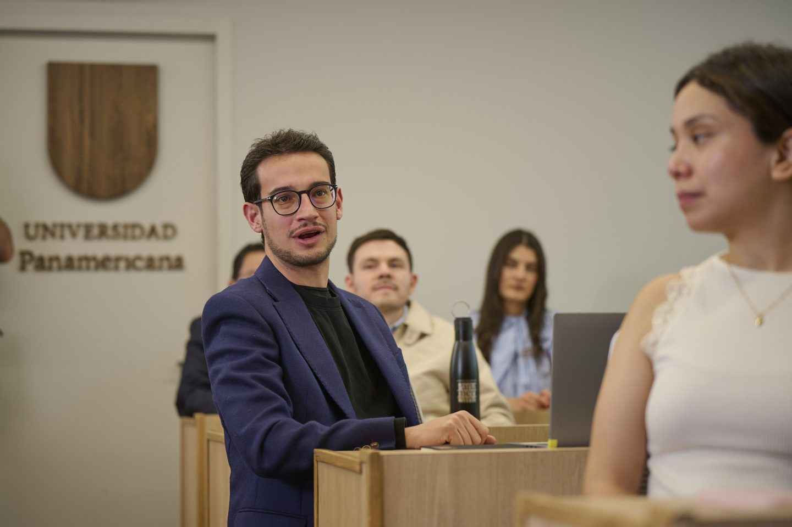
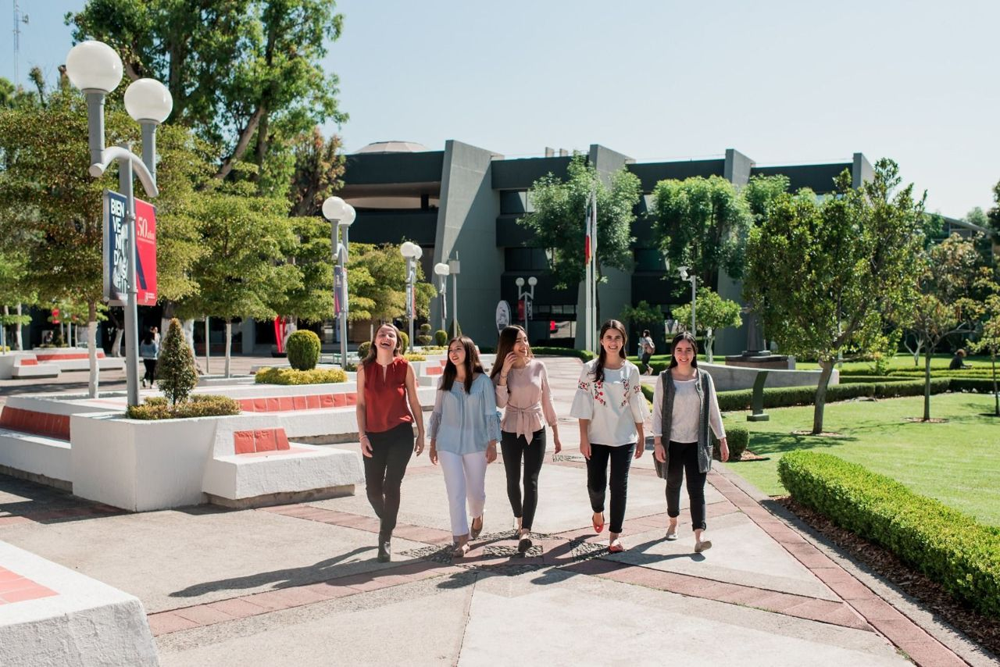
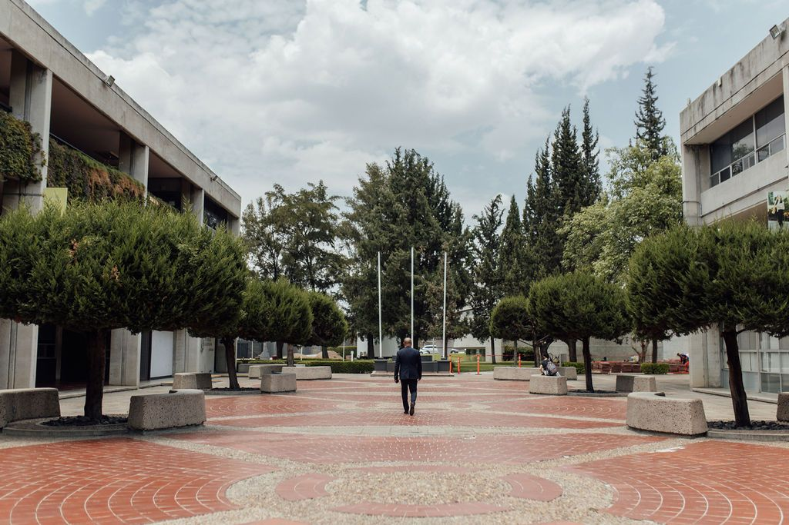

Posgrados Panamericana · Nosotros
Conoce la Universidad Panamericana
Creemos que el mundo sería mejor si todos reconociéramos nuestro potencial para alcanzar la mejor versión de nosotros mismos.
Posgrados Panamericana es la oferta de posgrado de la Universidad Panamericana, una institución de formación integral humana con sedes en Ciudad de México, Guadalajara y Aguascalientes. Su modelo se basa en una mentoría libre y personalizada, enfocada en desarrollar la grandeza humana de cada estudiante para el bien común.

Quiénes somos
¿Qué es la Universidad Panamericana?
«Una universidad que forma personas, no solo profesionales.»
La Universidad Panamericana es una institución de formación integral humana. Reconocemos el potencial que hay en cada persona y te ofrecemos una relación cercana para que desarrolles tu mejor versión. También respetamos tu libertad de decidir el impacto que tendrás en los demás. Esa es la base de Posgrados Panamericana.
Nuestro propósito
Creemos que el mundo sería mejor si todos reconociéramos nuestro potencial para alcanzar la mejor versión de nosotros mismos. Por eso no solo enseñamos una disciplina: te acompañamos a crecer como persona, para el bien común.
Un modelo de mentoría personalizada
Nuestro modelo se basa en la mentoría libre y personalizada. Desde el inicio, alguien te acompaña a identificar, desarrollar y potenciar tus talentos. La meta no es solo que hagas el bien. Es que seas la mejor versión de ti para los demás.
Posgrados Panamericana dentro de la UP
Posgrados Panamericana es la submarca de posgrado de la Universidad Panamericana. PENDIENTE
Tres campus, un mismo modelo
Nuestras sedes de posgrado
Estudia tu posgrado en la Panamericana en Ciudad de México, Guadalajara o Aguascalientes. Las tres sedes comparten el mismo modelo de formación integral. Elige la que mejor se adapte a tu vida.
-
Ciudad de México · Mixcoac y Santa Fe
Posgrados en Ciudad de México
Dos campus, Mixcoac y Santa Fe, con una misma comunidad. Aquí encontrarás maestrías, especialidades, doctorados, diplomados y cursos de distintas áreas académicas.
- Mixcoac: Augusto Rodin 498, Col. Insurgentes Mixcoac, C.P. 03920
- Santa Fe: Av. Javier Barros Sierra 540, piso 3, Col. Santa Fe, C.P. 01210
-

Guadalajara
Posgrados en Guadalajara
Vive la experiencia Panamericana en Guadalajara, con programas pensados para tu desarrollo profesional y humano.
- Av. Álvaro del Portillo 49, Ciudad Granja, Zapopan, C.P. 45010
-

Aguascalientes
Posgrados en Aguascalientes
La Universidad Panamericana también forma parte de la vida académica de Aguascalientes. Conoce lo que esta sede tiene para ti.
- José María Escrivá de Balaguer 101, Villas Bonaterra, C.P. 20296
Cinco pilares
Beneficios de estudiar tu posgrado en la UP
Un posgrado en la Universidad Panamericana es una experiencia que te reta, te acompaña y te transforma. Esto es lo que la hace distinta.
-
01
Educación personalizada
Mentoría desde el inicio. Te conocemos por tu nombre y te acompañamos en tus decisiones académicas y personales.
-
02
Excelencia académica
Un claustro con perfil investigador, vinculación con empresas e intercambio con universidades de todo el mundo.
-
03
Formación humana
Arte, cultura, deporte y bienestar. Una formación que va más allá del aula.
-
04
Compromiso social
Espacios donde tu talento se convierte en servicio real a la comunidad.
-
05
Investigación y difusión
Una universidad reconocida por su liderazgo científico entre las instituciones privadas del país.
Respaldo institucional
Reconocimientos que respaldan tu formación
La calidad de la Universidad Panamericana está respaldada por organismos y rankings nacionales e internacionales. Son una garantía de que tu formación cumple con altos estándares.
- 80universidades de intercambio en más de 30 países
- 140+docentes y directivos en el Sistema Nacional de Investigadores
- 1.er lugaren Liderazgo Científico entre universidades privadas del país
Datos institucionales de la Universidad Panamericana (manual de marca). PENDIENTE: vigencia
Acreditaciones · rankings · membresías PENDIENTE
- Acreditación 1
- Acreditación 2
- Acreditación 3
- Ranking 1
- Ranking 2
- Membresía 1
- Membresía 2
- Premio institucional
Empresas que confían en nuestros egresados PLACEHOLDER
- Logo empresa
- Logo empresa
- Logo empresa
- Logo empresa
- Logo empresa
- Logo empresa
- Logo empresa
- Logo empresa
Comunidad
Lo que viven quienes estudian en la Panamericana
«Testimonio breve enfocado en una transformación verificable. Se sustituye por una cita real, con nombre y consentimiento.»
Datos con fuente
- Indicador académico PLACEHOLDER
- Resultado de egresados PLACEHOLDER
- Alianza o proyecto destacado PLACEHOLDER
Preguntas frecuentes
Preguntas frecuentes sobre la Universidad Panamericana
Es una institución de formación integral humana con sedes en Ciudad de México, Guadalajara y Aguascalientes. Reconoce el potencial de cada persona y le ofrece una relación cercana para que desarrolle su mejor versión, respetando su libertad de decidir el impacto que tendrá en los demás.
Posgrados Panamericana es la submarca de posgrado de la Universidad Panamericana. Reúne sus maestrías, especialidades, doctorados, diplomados y programas de educación continua en Ciudad de México, Guadalajara y Aguascalientes, con el mismo modelo de formación integral y mentoría personalizada de la universidad.
Se basa en la mentoría libre y personalizada: desde el inicio, alguien te acompaña a identificar, desarrollar y potenciar tus talentos. Se sostiene en cinco pilares: educación personalizada, excelencia académica, formación humana, compromiso social e investigación y difusión.
La Universidad Panamericana ocupa el primer lugar entre las universidades privadas del país en Liderazgo Científico, cuenta con más de 140 docentes y directivos en el Sistema Nacional de Investigadores y mantiene intercambio académico con 80 universidades en más de 30 países. PENDIENTE: vigencia
Solicita información
¿Quieres saber si un posgrado UP es para ti?
Elegir un posgrado es una decisión importante, y no tienes que tomarla sin compañía. Cuéntanos qué te interesa y el equipo de Posgrados Panamericana te ayudará a encontrar tu camino.
Solicitud recibida
Gracias, te contactaremos pronto
Un asesor de admisiones de Posgrados Panamericana se pondrá en contacto contigo.
¿Quieres avanzar ahora?